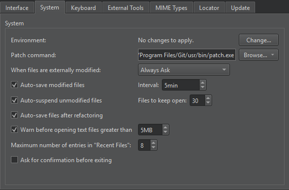

Turn on Silver Searcher
You can use Silver Searcher as a search engine in Qt Creator if you install Silver Searcher on the computer.

Note: Enable the SilverSearcher plugin to use it.
To use Silver Searcher:
- Download and install Silver Searcher from The Silver Searcher or GitHub.
You might have to build Silver Searcher from sources for some platforms.
- When searching, select Silver Searcher in Search engine.
If Qt Creator cannot find Silver Searcher, you might have installed it in a location that is not set in the PATH environment variable.
Set location of Silver Searcher
To tell Qt Creator where Silver Searcher is:
- Go to Preferences > Environment > System.

- In Environment, select Change.
- In Edit Environment, add the path to the Silver Searcher executable:
PATH=</path/to/bin>:${PATH}
See also Enable and disable plugins, How To: Search, and Edit environment settings.